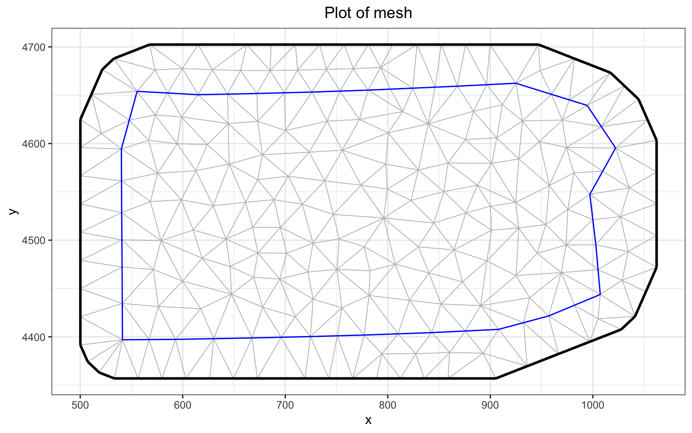

##Install if need be: you will need v2.0
# devtools::install_github(‘PhilipMostert/PointedSDMs@main’)
library(PointedSDMs)
library(INLA)
library(ggmap)
library(terra)SetophagaExercise
Introduction
In the first exercise you went through the steps to building an integrated model. Now we will look at the steps in a bit more detail. We will also improve the models after they have been set up (e.g. changing priors, changing the model), and look at how to evaluate how well the model fits the data.
Setophaga example
We will continue with the Setophaga data. As before, we will start by modelling the Black-throated blue warbler, Setophaga caerulescens.
Model preparations
The first step in our analysis is to load in the packages required.
A reminder, we have the following data:
- a map of Pennsylvania
- eBird: data for 3 species
- BBS: North American breeding bird survey data
- BBA: Pennsylvania Breeding Bird Atlas
- elevation: Elevation. Height above sea level. Probably sea level at low tide nowadays.
- canopy: canopy cover (a proxy for forest)
First we will go through the steps of importing the data. You may already have done this.
The code to import the data is here
# Map boundary
# if you need to download the package, you have to get it gtom GitHub
# devtools::install_github("ropensci/USAboundaries")
proj <- "+proj=utm +zone=17 +datum=WGS84 +units=km"
PA <- USAboundaries::us_states(states = "Pennsylvania")
PA <- st_transform(PA, proj)
# Species data
Data <- readRDS("../Data/Vignette_setophaga/SetophagaData.rds")
SetohagaData <- sapply(unique(Data$eBird$Species_name), function(sp, data) {
res <- list(
ebird = data$eBird[data$eBird$Species_name==sp,],
BBA = data$BBA[data$BBA$Species_name==sp,],
BBS = data$BBS[data$BBS$Species_name==sp,]
)
res
}, data=Data, simplify=FALSE)
# Covariate data
covariates <- scale(terra::rast(system.file('extdata/SetophagaCovariates.tif',
package = "PointedSDMs")))
names(covariates) <- c('elevation', 'canopy')
covariates$elevation_ebird <- covariates$elevation # we will use this later...
# plot(covariates)Now we have the data in several datasets. Next we need to integrate it into a common format that PointedSDMs can use. We need to pass it a few things:
- the boundary of the region
- a mesh
- each data set
- any covariates
We have the boundary (PA). For this and several other components we also need the projection (proj): to over-simplify, this tells us what units our our coordinates are in (with the added problem that our measurements aren’t Euclidean, because they are on a globe). Our species data re in SetohagaData, and our covaraites are in covariates.
We also need a mesh. We need this because we are calculating intensities all over our region. This is continuous, so we need to disctretise it in some way. We could split the region into pixels, but a mesh is more efficient.
Designing a mesh
Designing a good mesh is a dark art, that we are not sure anyone really understands. Fortunately Pennsylvania is a simple shape, so the mesh is not too complicated. Thanks to Slartibartfast’s efforts, it is more difficult to get a good mesh for crinkly countries like Norway.
Code for big mesh
meshBIG <- inla.mesh.2d(boundary = inla.sp2segment(PA),
cutoff = 0.2 * 5,
max.edge = c(0.1, 0.24) * 40, #120
offset = c(0.1, 0.4) * 100,
crs = st_crs(proj))mesh <- inla.mesh.2d(boundary = inla.sp2segment(PA),
cutoff = 10 * 5,
max.edge = c(1, 1.24) * 40, #120
offset = c(0.05, 0.4) * 100,
crs = st_crs(proj))
# mesh <- inla.mesh.2d(boundary = inla.sp2segment(PA),
# cutoff = 5 * 5,
# max.edge = c(0.1, 0.74) * 40, #120
# offset = c(0.1, 0.4) * 100,
# crs = st_crs(proj))
mesh_plot <- ggplot() +
gg(mesh) +
ggtitle('Plot of mesh') +
theme_bw() +
theme(plot.title = element_text(hjust = 0.5))
mesh_plot
Our coarse mesh is OK, and has 228 points in it. We also have a big mesh with 20674 points, which takes longer to run but produces better results. We would suggest you wait until after the workshop to try it (it only takes a few minutes, but will be annoying if we start another exercise whilst you’re waiting.
Integrating the data
Now we organise our species data with startISDM():
# These make the model fitting more stable
modelOptions <- list(control.inla = list(int.strategy = 'eb', diagonal = 0.1),
verbose = FALSE, safe = TRUE)
caerulescensModel <- startISDM(SetohagaData$Setophaga_caerulescens,
Boundary = PA, # a polygon of the boundary
Projection = proj, # the geographical projection
Mesh = mesh, # the mesh, which we have just made
responsePA = 'NPres', # Name of response for binomial data
trialsPA = 'Trials', # Name of no. of trials for binomial data
spatialCovariates = covariates, # Environmental covariates
Formulas = list(covariateFormula = ~ elevation + canopy)
)
caerulescensEst <- fitISDM(data = caerulescensModel)The startISDM() function is used to put the pieces together. In essence, we provide it with this information:
- the different data sets
- the mesh and boundary (to define the area we are modelling)
- which data columns are counts or presence/absence (i.e. what are the likelihoods for these data).
But we can also provide more: above we add a Formulas list. The model in the first exercise assumed that the covariates had linear effects, but here we also add quadratic terms.
Once we have this set up, we can edit the model to change things like priors, and add different terms.
Improving the model
We can change the model in a few ways. Both the process model (i.e. the distribution model) and the different observation models can be changed. And each can, of course be changed in different ways
If you need help with the object you create, you can get some here:
caerulescensModel$help()(it is an R6 class, so the syntax is a bit different to what you might be used to)
Improving the Process model
Adding spatial terms
We can add and modify spatial terms with .$specifySpatial. For example, if we want to change the spatial effect on the actual distribution (i.e. the residual spatial field), we can do it like this:
caerulescensModel$specifySpatial(sharedSpatial = TRUE,
prior.sigma = c(1, 0.1), # P(sigma > 1) = 0.1
prior.range = c(1, 0.1)) # P(range < 15) = 0.1
caerulescensEst <- fitISDM(data = caerulescensModel)First, note that this changes the caerulescensModel object (so is different to classical R syntax). The prior.sigmaand prior.range are parameters for a PC prior. We will sidestep what their details for now, but good introductions are available.
Priors for fixed effects:.$priorsFixed
Suppose we knew a priori what the mean and precision values of one of the fixed terms for a given species was: we could add this knowledge to the model using the .$priorsFixed function.
caerulescensModel$priorsFixed(Effect = 'elevation',
mean.linear = -5,
prec.linear = 10)
caerulescensEst <- fitISDM(data = caerulescensModel,
options = modelOptions)
summary(caerulescensEst)$fixedSummary of 'modISDM' object:
inlabru version: 2.10.1
INLA version: 24.06.04
Types of data modelled:
ebird Present only
BBA Present absence
BBS Present absence mean sd 0.025quant 0.5quant 0.975quant mode kld
ebird_intercept -4.834 0.184 -5.195 -4.834 -4.473 -4.834 0
BBA_intercept -1.839 0.086 -2.009 -1.839 -1.669 -1.839 0
BBS_intercept -2.937 0.125 -3.183 -2.937 -2.691 -2.937 0
elevation 0.863 0.054 0.756 0.863 0.969 0.863 0
canopy 0.764 0.048 0.670 0.764 0.858 0.764 0The prior here is ridiculously tight, but we can see that it does affect the posterior.
Formula
We can also update the formula, to change the model. For example, here we add a quadratic effect of elevation.
caerulescensModel$updateFormula(???,
Formula = . ~ . + I(elevation^2))
caerulescensEst <- fitISDM(data = caerulescensModel,
options = modelOptions)
summary(caerulescensEst)$fixedObservation Process: individual data sets
We can also change the model of the observation process for each data set, or share parts of the model across more than one data set.
Spatial bias
A well known problem with people is that they don’t collect data according to well designed experimental protocols. With citizen science data, such as eBird, we want to correct for spatial biases in where people collect. We can add covaraites to model this bias, but here we will model the bias with a spatial field, something which seems to work surprisingly well (Simmonds et al. 2020). We can add it to the model like this:
First we add a bias field, with $addBias(). We could fit the model at that point, but then we change the prior to a PC prior.
caerulescensModel$help() # use this to see what data sets are available, and what their names areDocumentation for specifyISDM:caerulescensModel$addBias(datasetNames = 'ebird')Turning copyModel off since the number of datasets specified is less than 2.caerulescensModel$specifySpatial(Bias = TRUE, # Change the prior
prior.sigma = c(0.1, 0.1),
prior.range = c(15, 0.1))
caerulescensEst <- fitISDM(data = caerulescensModel,
options = modelOptions)
summary(caerulescensEst)$hyperSummary of 'modISDM' object:
inlabru version: 2.10.1
INLA version: 24.06.04
Types of data modelled:
ebird Present only
BBA Present absence
BBS Present absence mean sd 0.025quant 0.5quant 0.975quant mode
Range for ebird_spatial 35.172 8.725 20.304 34.394 54.380 33.173
Stdev for ebird_spatial 1.277 0.172 0.969 1.267 1.644 1.249
Range for ebird_biasField 59.011 6.820 46.734 58.618 73.550 57.836
Stdev for ebird_biasField 1.938 0.150 1.661 1.932 2.252 1.918
Beta for BBA_spatial 0.365 0.079 0.211 0.364 0.524 0.361
Beta for BBS_spatial 1.521 0.166 1.208 1.517 1.860 1.498If we want to model the observation process for a data set, we can do that by changing the formula for the dataset. For example, we might think that birders in Pennsylvania don’t like heights (if they did, they would be in Colorado, after all), and add elevation as a covarate:
# This does not seem to be working!!!!!
caerulescensModel$updateFormula(data='ebird',
Formula = ~ . + elevation_ebird)
caerulescensEst <- fitISDM(data = caerulescensModel,
options = modelOptions)
summary(caerulescensEst)$fixedSummary of 'modISDM' object:
inlabru version: 2.10.1
INLA version: 24.06.04
Types of data modelled:
ebird Present only
BBA Present absence
BBS Present absence mean sd 0.025quant 0.5quant 0.975quant mode kld
ebird_intercept -4.589 0.229 -5.037 -4.589 -4.141 -4.589 0
BBA_intercept -3.753 0.133 -4.013 -3.753 -3.493 -3.753 0
BBS_intercept -3.321 0.235 -3.782 -3.321 -2.859 -3.321 0
elevation 1.541 0.072 1.400 1.541 1.682 1.541 0
canopy 2.137 0.082 1.977 2.137 2.298 2.137 0This model might seem slightly strange: we have elevation as a process model, but also in one of the observation models. We can do this in this case because we have multiple data sets: the information about the effect of elevation on the actual distribution come from the other data sets.
Model evaluation
PointedSDMs has two functions to functions to evaluate models. These are blockedCV and datasetOut Both do cross- validation, but in different ways.
blockedCVdoes block cross-validation, by removing blocks from the training data, and using them as test data.datasetOutdrops each data set, and then tests on it.
Block Cross validation
.$spatialBlock is used to set up spatial blocked cross-validation for the model by assigning each point in the datasets a block based on where the point is located spatially. For this example, we chose four blocks (k=2) for our model, based around a 2x2 grid (rows = 2, cols = 2). See the figure below for an illustration of the spatial block: the amount of data within each block appears reasonably equal.
caerulescensModel$spatialBlock(k = 5, rows_cols = c(2, 2), plot = TRUE) + theme_bw()The blocked model may then be estimated with blockedCV. Note that this will estimate k models, so it may take a while to complete. Plus, with this ecample it falls apart.
# this gives lots of warnings
spatialBlocked <- blockedCV(data = caerulescensModel,
options = modelOptions)
spatialBlockedMore so, we can compare the cross-validation score from this model to one without the shared spatial effect (specified with pointsSpatial = FALSE in startISDM).
caerulescens_no_fields <- startISDM(SetohagaData$Setophaga_caerulescens,
pointsSpatial = NULL,
Boundary = PA, # a polygon of the boundary
Projection = proj, # the geographical projection
Mesh = mesh, # the mesh, which we have just made
responsePA = 'NPres', # Name of response for binomial data
trialsPA = 'Trials', # Name of no. of trials for binomial data
spatialCovariates = covariates, # Environmental covariates
Formulas = list(covariateFormula = ~ elevation + canopy)
)
caerulescens_no_fields_model <- fitISDM(data = caerulescens_no_fields)
caerulescens_no_fields$spatialBlock(k = 2, rows_cols = c(2, 2), plot = TRUE) + theme_bw()
spatialBlocked_no_fields <- blockedCV(data = caerulescens_no_fields,
options = modelOptions)
spatialBlocked_no_fieldsSpatial block cross-validation score:
Formula: ~Fixed__Effects__Comps + ebird_intercept + BBA_intercept + BBS_intercept
mean.deviance p.eff dic
fold 1 3310.500 -19811.11 -16500.61
fold 2 3906.921 -30024.47 -26117.55
mean DIC score: -21309.08Based on the DIC scores, we conclude that the model with the shared spatial field provides a better fit of the data.
Validation by Data set
We can also try validation by dropping a data set, fitting to the model to the other data sets and then using the dropped data set to valilate the model. We can use the datasetOut() function to do this.
By setting predictions = TRUE we are able to calculate some cross-validation score by leaving out the selected dataset, but using the predicted values as an offset in a new model, and then finding the difference between the marginal-likelihood of the full model (i.e the model with all the datasets considered) and the marginal-likelihood of the offset model.
dataset_out <- datasetOut(model = caerulescensEst,
dataset = "BBA",
predictions = TRUE)
dataset_outChanges in fixed values by leaving out BBA:
mean sd 0.025quant 0.5quant 0.975quant mode
ebird_intercept 2.215983 0.07489004 2.069202 2.215983 2.362765 2.215983
BBS_intercept -2.699511 0.09341408 -2.882600 -2.699511 -2.516423 -2.699511
kld
ebird_intercept 0
BBS_intercept 0
Leave-one-out cross-validation score: -214.7811Note that this is not stable, thanks to the mesh.
Your turn
Now we can try the same analysis with a different species. These are the steps you need to take:
- download the species data
- download the covariate data
- make a mesh (you will ned a boundary)
- organise the data with
startISDM() - fit the model to the data with
fitISDM() - Plot the predictions
We will help you with the first couple of steps. Here is the first model for the magnolia
magnoliaData <- SetohagaData$Setophaga_magnolia
magnoliaModel <- startISDM(SetohagaData$Setophaga_magnolia, # the data
Boundary = PA, # a polygon of the boundary
Projection = proj, # the geographical projection
Mesh = mesh, # the mesh, which we have just made
responsePA = 'NPres', # Name of response for binomial data
trialsPA = 'Trials', # Name of no. of trials for binomial data
spatialCovariates = covariates # Environmental covariates
)
magnoliaEst <- fitISDM(data = magnoliaModel, options = modelOptions)
# we will use this soon
magnoliaModel$spatialBlock(k = 5, rows_cols = c(2, 2), plot = TRUE) + theme_bw()
If you want to see the code for S. fusca, it is here.
fuscaData <- SetohagaData$Setophaga_fusca
fuscaModel <- startISDM(SetohagaData$Setophaga_fusca, # the data
Boundary = PA, # a polygon of the boundary
Projection = proj, # the geographical projection
Mesh = mesh, # the mesh, which we have just made
responsePA = 'NPres', # Name of response for binomial data
trialsPA = 'Trials', # Name of no. of trials for binomial data
spatialCovariates = covariates # Environmental covariates
)
fuscaEst <- fitISDM(data = fuscaModel, options = modelOptions)
# we will use this soon
fuscaModel$spatialBlock(k = 5, rows_cols = c(2, 2), plot = TRUE) + theme_bw()
- are quadratic effects worth adding?
Well, are they?
magnoliaModel$updateFormula(???,
Formula = . ~ . + I(elevation^2))
magnoliaEst <- fitISDM(data = caerulescensModel,
options = modelOptions)
summary(magnoliaEst)$fixed- Should we add a bias field?
Here is the code for the Magnolia analysis
# first do the block CV on the original model
magnoliaBlocked <- blockedCV(data = magnoliaModel, options = modelOptions)
# now add the spatial bias term
magnoliaModel$help() # use this to see what data sets are available, and what their names are
## Documentation for specifyISDM:
magnoliaModel$addBias(datasetNames = 'ebird')
## Turning copyModel off since the number of datasets specified is less than 2.
magnoliaModel$specifySpatial(Bias = TRUE, # Change the prior
prior.sigma = c(0.1, 0.1),
prior.range = c(15, 0.1))
magnoliaEstBias <- fitISDM(data = magnoliaModel,
options = modelOptions)
magnoliaBlockedBias <- blockedCV(data = magnoliaModel, options = modelOptions)
magnoliaBlocked
## Spatial block cross-validation score:
##
## Formula: ~ebird_spatial + BBA_spatial + BBS_spatial + elevation + canopy + elevation_ebird + ebird_intercept + BBA_intercept + BBS_intercept
##
## mean.deviance p.eff dic
## fold 1 3706.224 -45585.14 -41878.92
## fold 2 2324.868 -37948.44 -35623.57
## fold 3 4644.431 -40292.80 -35648.37
## fold 4 4386.498 -50274.28 -45887.79
## fold 5 4579.271 -53463.67 -48884.40
##
## mean DIC score: -41584.61
magnoliaBlockedBias
## Spatial block cross-validation score:
##
## Formula: ~ebird_spatial + BBA_spatial + BBS_spatial + elevation + canopy + elevation_ebird + ebird_intercept + BBA_intercept + BBS_intercept + ebird_biasField
##
## mean.deviance p.eff dic
## fold 1 3701.231 -45580.54 -41879.31
## fold 2 2346.440 -37924.83 -35578.39
## fold 3 4629.531 -40268.98 -35639.44
## fold 4 4369.814 -50268.98 -45899.17
## fold 5 4578.782 -53463.38 -48884.59
##
## mean DIC score: -41576.18Here is the code for the fusca analysis
# first do the block CV on the original model
fuscaBlocked <- blockedCV(data = fuscaModel, options = modelOptions)
# now add the spatial bias term
fuscaModel$help() # use this to see what data sets are available, and what their names are
## Documentation for specifyISDM:
fuscaModel$addBias(datasetNames = 'ebird')
## Turning copyModel off since the number of datasets specified is less than 2.
fuscaModel$specifySpatial(Bias = TRUE, # Change the prior
prior.sigma = c(0.1, 0.1),
prior.range = c(15, 0.1))
fuscaEstBias <- fitISDM(data = fuscaModel,
options = modelOptions)
fuscaBlockedBias <- blockedCV(data = fuscaModel, options = modelOptions)
fuscaBlocked
## Spatial block cross-validation score:
##
## Formula: ~ebird_spatial + BBA_spatial + BBS_spatial + elevation + canopy + elevation_ebird + ebird_intercept + BBA_intercept + BBS_intercept
##
## mean.deviance p.eff dic
## fold 1 3884.567 -24981.87 -21097.30
## fold 2 5257.868 -31468.55 -26210.68
## fold 3 5265.238 -34078.79 -28813.55
## fold 4 2882.102 -21276.55 -18394.45
## fold 5 4819.689 -30960.26 -26140.57
##
## mean DIC score: -24131.31
fuscaBlockedBias
## Spatial block cross-validation score:
##
## Formula: ~ebird_spatial + BBA_spatial + BBS_spatial + elevation + canopy + elevation_ebird + ebird_intercept + BBA_intercept + BBS_intercept + ebird_biasField
##
## mean.deviance p.eff dic
## fold 1 3884.266 -24981.75 -21097.48
## fold 2 5017.850 -31469.69 -26451.84
## fold 3 5034.978 -34014.32 -28979.34
## fold 4 3272.840 -19641.34 -16368.50
## fold 5 4653.683 -30871.80 -26218.12
##
## mean DIC score: -23823.06Hint
Answer
References
Simmonds, Emily G, Susan G Jarvis, Peter A Henrys, Nick JB Isaac, and Robert B O’Hara. 2020. “Is More Data Always Better? A Simulation Study of Benefits and Limitations of Integrated Distribution Models.” Ecography 43 (10): 1413–22. https://doi.org/10.1111/ecog.05146.